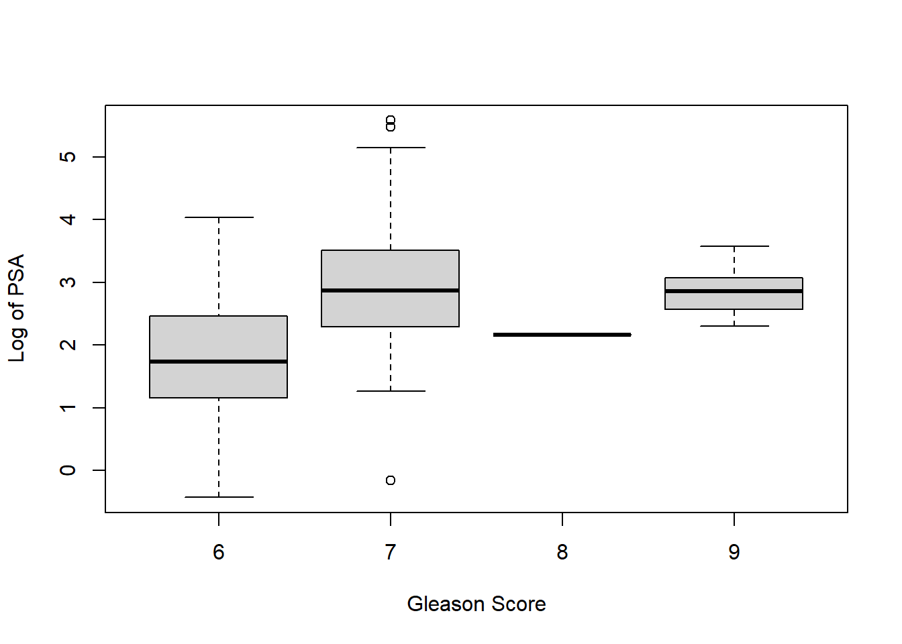
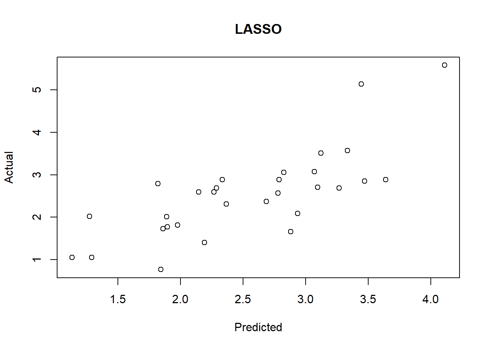

Regularization Penalized Regression
Introduction
Motivation
The motivation for employing regularization in linear models arises from several contemporary challenges in data analysis:
- High Dimensionality:
- Many modern datasets feature a vast number of variables, sometimes matching or even exceeding the number of observations. This phenomenon is known as high dimensionality. Such datasets are not uncommon in fields like genomics, finance, and image recognition.
- Computational Cost:
- With the increasing scale of data, traditional methods like best subset selection and stepwise feature selection become computationally expensive. For instance, finding an optimal subset in large datasets might require hours of computation, even with high-speed computers.
- Advancements in Techniques:
- Over the past two decades, newer techniques have been developed and refined. These methods surpass the predictive power and interpretability of the linear models discussed in earlier chapters, providing more efficient and scalable solutions.
Multicollinearity
Data Collection: Sometimes, data are collected from a narrow subspace of the independent variables, creating multicollinearity through the sampling method, which might not exist in the population. Obtaining more data over an expanded range can mitigate this issue.
Overdefined Models: Situations where there are more variables than observations can lead to multicollinearity. This should generally be avoided.
Model Specification: Using powers or interactions of the original variables as new predictors can introduce multicollinearity, especially if the sampling subspace of the independent variables is narrow.
Outliers: Extreme values or outliers in the X-space can induce and mask multicollinearity. This is referred to as multicollinearity caused by outliers and should be corrected by removing outliers before applying techniques like ridge regression.
Regularization serves as a crucial technique in modern statistical modeling, offering a practical approach to handle high-dimensional data and multicollinearity, while enhancing the predictive performance of linear models.
Regularization Overview
Regularization techniques adjust the coefficients of linear regression models to prevent overfitting, potentially reducing some coefficients to zero. Key regularization methods include:
- Ridge Regression: Adds a penalty equal to the square of the magnitude of coefficients.
- Lasso (Least Absolute Shrinkage and Selection Operator): Penalizes the absolute value of the regression coefficients.
- Elastic Net: Combines penalties of both ridge and lasso regression, allowing for a balance between variable selection and multicollinearity.
The general form of a regularized linear regression model can be expressed as: \[Y ≈ β_0 + β_1X_1 + β_2X_2 + …+ β_pX_p\]
During the fitting process, the objective is to minimize the Residual Sum of Squares (RSS), which measures the difference between observed and predicted values: \[\text{RSS} = \sum _{i=1}^{n}(y_{i}-f(x_{i}))^{2} = \sum _{i=1}^{n}(\varepsilon _{i})^{2}=\sum _{i=1}^{n}(y_{i}-(\alpha +\beta x_{i}))^{2}\]
Regularization introduces a shrinkage penalty to the minimization of RSS. This penalty is controlled by the tuning parameter λ: \[y = β_0 + β_1x_1 + β_2x_2 + … + β_kx_k + λ(\text{slope})²\] When λ = 0, the model reduces to ordinary least squares (OLS) regression, as the regularization term has no effect.
Strengths of Regularization
Computational Efficiency: Regularization is computationally efficient compared to best subset selection, which would require testing \(2^p\) models on a large dataset. Regularization only requires fitting a single model for each value of λ.
Bias-Variance Tradeoff: In linear models, when the relationship between the response and predictor variables is nearly linear, least squares estimates are almost unbiased but can have high variance. This means small changes in the training data can cause large variations in the least squares estimates. Regularization optimally adjusts the bias-variance tradeoff, improving model performance by appropriately selecting λ and the form of regularization.
Multicollinearity: Regularization can address issues of multicollinearity, which arises when predictor variables are highly correlated. This can distort the estimates of the coefficients, making the model sensitive to changes in the model specifications.
Model Selection
Data preparation
- lcavol: logarithm of tumor volume
- lweight: logarithm of prostate weight
- age: patient age in years
- lbph: logarithm of benign prostatic hyperplasia (BPH), non-cancerous prostatic hyperplasia.
- svi: seminal vesicle invasion, an indicator variable indicating whether cancer cells have penetrated the prostate wall and invaded the seminal vesicle (1=yes, 0=no).
- lcp: logarithm of capsule penetration, indicating the extent to which cancer cells have spread beyond the prostate capsule.
- gleason: the patient’s Gleason score; given by a pathologist after a biopsy (2-10), indicating the degree of mutation of the cancer cells - the higher the score, the more dangerous it is.
- pgg45: the percentage of patients with a Gleason score of 4 or 5 (high-grade cancer).
- lpsa: logarithm of the PSA value, the response variable.
- train: a logical vector (TRUE or FALSE, used to distinguish between training data and test data)
# library(car) # package to calculate Variance Inflation Factor
# library(corrplot) # correlation plots
# library(leaps) # best subsets regression
# library(glmnet) # allows ridge regression, LASSO and elastic net
# library(caret) # this will help identify the appropriate parameters
prostate <- read.delim("./01_Datasets/prostate.txt", header=T)
# Graphs or tables to understand the data
# As you can see, there is indeed a clear linear relationship between the outcome variable lpsa and the predictor variable lcavol
plot(prostate)# Create a graph specifically for the feature Gleason
plot(prostate$gleason, ylab = "Gleason Score")table(prostate$gleason)##
## 6 7 8 9
## 35 56 1 5# Solution
# Delete this feature completely;
# Delete only those scores with values of 8.0 and 9.0;
# Recode the feature to create an indicator variable.
# Creating a box plot with Gleason Score on the horizontal axis and Log of PSA on the vertical axis will help us make our choice
# The best option is to convert this feature into an indicator variable, with 0 representing a score of 6 and 1 representing a score of 7 or higher. Removing the feature may lose the predictive power of the model. Missing values may also cause problems in the glmnet package we will use.
boxplot(prostate$lpsa ~ prostate$gleason, xlab = "Gleason Score",
ylab = "Log of PSA")
# Use ifelse() command to encode indicator variables
prostate$gleason <- ifelse(prostate$gleason == 6, 0, 1)
table(prostate$gleason)##
## 0 1
## 35 62# Correlation statistics, indicating whether there is correlation or dependence between features
# Problem found: PSA and logarithm of tumor volume (lcavol) are highly correlated 0.73, multicollinearity: tumor volume is also related to capsule penetration, and capsule penetration is also related to seminal vesicle invasion
p.cor = cor(prostate[,-1])
corrplot.mixed(p.cor)# Before starting machine learning, you must first create a training data set and a test data set
# There is already a feature in the observation that indicates whether the observation belongs to the training set, so we can use the subset() command to divide the observations with a train value of TRUE into In the training set, the observations with train value FALSE are assigned to the test set
train <- subset(prostate, train == TRUE)[, 2:10]
str(train)## 'data.frame': 67 obs. of 9 variables:
## $ lcavol : num -0.58 -0.994 -0.511 -1.204 0.751 ...
## $ lweight: num 2.77 3.32 2.69 3.28 3.43 ...
## $ age : int 50 58 74 58 62 50 58 65 63 63 ...
## $ lbph : num -1.39 -1.39 -1.39 -1.39 -1.39 ...
## $ svi : int 0 0 0 0 0 0 0 0 0 0 ...
## $ lcp : num -1.39 -1.39 -1.39 -1.39 -1.39 ...
## $ gleason: num 0 0 1 0 0 0 0 0 0 1 ...
## $ pgg45 : int 0 0 20 0 0 0 0 0 0 30 ...
## $ lpsa : num -0.431 -0.163 -0.163 -0.163 0.372 ...test = subset(prostate, train==FALSE)[,2:10]
str(test)## 'data.frame': 30 obs. of 9 variables:
## $ lcavol : num 0.737 -0.777 0.223 1.206 2.059 ...
## $ lweight: num 3.47 3.54 3.24 3.44 3.5 ...
## $ age : int 64 47 63 57 60 69 68 67 65 54 ...
## $ lbph : num 0.615 -1.386 -1.386 -1.386 1.475 ...
## $ svi : int 0 0 0 0 0 0 0 0 0 0 ...
## $ lcp : num -1.386 -1.386 -1.386 -0.431 1.348 ...
## $ gleason: num 0 0 0 1 1 0 0 1 0 0 ...
## $ pgg45 : int 0 0 0 5 20 0 0 20 0 0 ...
## $ lpsa : num 0.765 1.047 1.047 1.399 1.658 ...Best subset regression
# 通过regsubsets()命令建立一个最小子集对象
subfit <- regsubsets(lpsa ~ ., data = train)
b.sum <- summary(subfit)
# 使用贝叶斯信息准则，三特征模型具有最小的BIC值
which.min(b.sum$bic)## [1] 3# 通过一个统计图查看模型性能和子集组合之间的关系
plot(b.sum$bic, type = "l", xlab = "# of Features", ylab = "BIC",
main = "BIC score by Feature Inclusion")# 对实际模型做出统计图，进行更详细的检查，上图告诉我们具有最小BIC值的模型中的3个特征是:lcavol、lweight和gleason
plot(subfit, scale = "bic", main = "Best Subset Features")# 用以上3个变量建立一个线性模型
ols <- lm(lpsa ~ lcavol + lweight + gleason, data = train)
# 线性拟合表现得很好，也不存在异方差性
plot(ols$fitted.values, train$lpsa, xlab = "Predicted", ylab = "Actual",
main = "Predicted vs Actual")
# 模型在测试集上的表现
pred.subfit = predict(ols, newdata=test)
plot(pred.subfit, test$lpsa , xlab = "Predicted",
ylab = "Actual", main = "Predicted vs Actual")
# 计算均方误差MSE，以便在不同模型构建技术之间进行比较
resid.subfit = test$lpsa - pred.subfit
mean(resid.subfit^2)## [1] 0.5084126Ridge Regression
岭回归(Ridge regression, Tikhonov regularization) 是一种专用于共线性数据分析的有偏估计回归方法，实质上是一种改良的最小二乘估计法，通过放弃最小二乘法的无偏性，以损失部分信息、降低精度为代价获得回归系数更为符合实际、更可靠的回归方法，对病态数据的拟合要强于最小二乘法。
在岭回归中，规范化项是所有 系数的平方和，称为L2-norm(L2范数)。在我们的模型中就是试图最小化RSS + λ(sumβj2)。 当λ增加时，系数会缩小，趋向于0但永远不会为0。 岭回归的优点是可以提高预测准确度，但因为它不能使任何一个特征的系数为0，所以在模型解释性上会有些问题
Hoerl and Kennard (1970) proposed that potential instability in the LS estimator \[ \hat{\beta}=\left(X^{\prime} X\right)^{-1} X^{\prime} Y, \] could be improved by adding a small constant value \(\lambda\) to the diagonal entries of the matrix \(X^{\prime} X\) before taking its inverse. The result is the ridge regression estimator \[ \hat{\beta}_{\text {ridge }}=\left(X^{\prime} X+\lambda I_{p}\right)^{-1} X^{\prime} Y \] Ridge regression places a particular form of constraint on the parameters \(\left(\beta^{\prime} \mathrm{s}\right): \hat{\beta}_{\text {ridge }}\) is chosen to minimize the penalized sum of squares: \[ \sum_{i=1}^{n}\left(y_{i}-\sum_{j=1}^{p} x_{i j} \beta_{j}\right)^{2}+\lambda \sum_{j=1}^{p} \beta_{j}^{2} \] which is equivalent to minimization of \(\sum_{i=1}^{n}\left(y_{i}-\sum_{j=1}^{p} x_{i j} \beta_{j}\right)^{2}\) subject to, for some \(c>0, \sum_{j=1}^{p} \beta_{j}^{2}<c\), i.e. constraining the sum of the squared coefficients. Therefore, ridge regression puts further constraints on the parameters, \(\beta_{j}\) ’s, in the linear model. In this case, what we are doing is that instead of just minimizing the residual sum values, the optimization function is penalized. We would prefer to take smaller \(\beta_{j}\) ’s, or \(\beta_{j}\) ’s that are close to zero to drive the penalty term small.
Modeling
岭回归的命令形式为glmnet(x=输入矩阵, y=响应变量, family= 分布函数, alpha=0)。 * alpha为0时，表示进行岭回归; * alpha为1时，表示进行LASSO
glmnet包会在计算λ值之前首先对输入进行标准化， 然后计算非标准化系数。 需要指定响应变量的分布为gaussian，因为它是连续的;还要指定 alpha = 0，表示进行岭回归。
x <- as.matrix(train[, 1:8])
y <- train[, 9]
ridge <- glmnet(x, y, family = "gaussian", alpha = 0)
# print()命令，它会展示非0 系数的数量，解释偏差百分比以及相应的λ值。程序包中算法默认的计算次数是100，但如果偏差 百分比在两个λ值之间的提高不是很显著的话，算法会在100次计算之前停止。也就是说，算法收 敛于最优解
# 第100行为例。可以看出非0系数，即模型中包含的特征的数量为8。在岭回归中，这个数是不变的。还可以看出解释偏差百分比为0.6971，以及这一行的调优系数λ的值为0.08789。
print(ridge)##
## Call: glmnet(x = x, y = y, family = "gaussian", alpha = 0)
##
## Df %Dev Lambda
## 1 8 0.00 878.90
## 2 8 0.56 800.80
## 3 8 0.61 729.70
## 4 8 0.67 664.80
## 5 8 0.74 605.80
## 6 8 0.81 552.00
## 7 8 0.89 502.90
## 8 8 0.97 458.20
## 9 8 1.07 417.50
## 10 8 1.17 380.40
## 11 8 1.28 346.60
## 12 8 1.40 315.90
## 13 8 1.54 287.80
## 14 8 1.68 262.20
## 15 8 1.84 238.90
## 16 8 2.02 217.70
## 17 8 2.21 198.40
## 18 8 2.42 180.70
## 19 8 2.64 164.70
## 20 8 2.89 150.10
## 21 8 3.16 136.70
## 22 8 3.46 124.60
## 23 8 3.78 113.50
## 24 8 4.13 103.40
## 25 8 4.50 94.24
## 26 8 4.91 85.87
## 27 8 5.36 78.24
## 28 8 5.84 71.29
## 29 8 6.36 64.96
## 30 8 6.93 59.19
## 31 8 7.54 53.93
## 32 8 8.19 49.14
## 33 8 8.90 44.77
## 34 8 9.65 40.79
## 35 8 10.46 37.17
## 36 8 11.33 33.87
## 37 8 12.25 30.86
## 38 8 13.24 28.12
## 39 8 14.28 25.62
## 40 8 15.39 23.34
## 41 8 16.55 21.27
## 42 8 17.78 19.38
## 43 8 19.07 17.66
## 44 8 20.41 16.09
## 45 8 21.81 14.66
## 46 8 23.27 13.36
## 47 8 24.77 12.17
## 48 8 26.31 11.09
## 49 8 27.90 10.10
## 50 8 29.51 9.21
## 51 8 31.15 8.39
## 52 8 32.81 7.64
## 53 8 34.47 6.96
## 54 8 36.14 6.35
## 55 8 37.80 5.78
## 56 8 39.45 5.27
## 57 8 41.08 4.80
## 58 8 42.68 4.37
## 59 8 44.24 3.99
## 60 8 45.76 3.63
## 61 8 47.24 3.31
## 62 8 48.66 3.02
## 63 8 50.03 2.75
## 64 8 51.34 2.50
## 65 8 52.60 2.28
## 66 8 53.80 2.08
## 67 8 54.93 1.89
## 68 8 56.01 1.73
## 69 8 57.03 1.57
## 70 8 58.00 1.43
## 71 8 58.91 1.30
## 72 8 59.76 1.19
## 73 8 60.57 1.08
## 74 8 61.33 0.99
## 75 8 62.04 0.90
## 76 8 62.70 0.82
## 77 8 63.33 0.75
## 78 8 63.91 0.68
## 79 8 64.45 0.62
## 80 8 64.96 0.56
## 81 8 65.43 0.51
## 82 8 65.87 0.47
## 83 8 66.28 0.43
## 84 8 66.66 0.39
## 85 8 67.01 0.35
## 86 8 67.33 0.32
## 87 8 67.63 0.29
## 88 8 67.90 0.27
## 89 8 68.15 0.24
## 90 8 68.38 0.22
## 91 8 68.59 0.20
## 92 8 68.77 0.18
## 93 8 68.94 0.17
## 94 8 69.09 0.15
## 95 8 69.23 0.14
## 96 8 69.35 0.13
## 97 8 69.46 0.12
## 98 8 69.55 0.11
## 99 8 69.64 0.10
## 100 8 69.71 0.09# Y轴是系数值，X轴是L1范数，图中显示了系数值和L1范数之间的关系
plot(ridge, label = TRUE)# 看系数值 如何随着λ的变化而变化
plot(ridge, xvar = "lambda", label = TRUE)# 看系数值如何随解释偏差百分比变化，将lamda换成dev
# 当λ减小时，系数会增大，解释偏差百分比也 会增大。如果将λ值设为0，就会忽略收缩惩罚，模型将等价于OLS
plot(ridge, xvar = "dev", label = TRUE)# 在测试集上证明
newx <- as.matrix(test[, 1:8])
ridge.y = predict(ridge, newx = newx, type = "response", s=0.1)
# 画出表示预测值和实际值关系的统计图
plot(ridge.y, test$lpsa, xlab = "Predicted",
ylab = "Actual", main = "Ridge Regression")
# 计算MSE
ridge.resid <- ridge.y - test$lpsa
mean(ridge.resid^2)## [1] 0.4783559Lasso Regression
区别于岭回归中的L2-norm，LASSO使用L1-norm，即所有特征权重的绝对值之和， 也就是要最小化RSS + λ(sum|βj|)。这个收缩惩罚项确实可以使特征权重收缩到0. 相对于岭回归，这是 L2-norm 一个明显的优势，因为可以极大地提高模型的解释性。 但是，存在高共线性或高度两两相关 的情况下，LASSO可能会将某个预测特征强制删除，这会损失模型的预测能力. 如果 特征A和B都应该存在于模型之中，那么LASSO可能会将其中一个的系数缩减到0。
如果较少数目的预测变量有实际系数，其余预测变量的系数要么非常小，要么为0， 那么在这样的情况下，LASSO性能更好。 当响应变量是很多预测变量的函数，而且预测变量的系数大小都差不多时，岭回归表现得更好 两全其美的机会: 弹性网络既能做到岭回归不能做的特征提取，也能实现LASSO不能做的 特征分组。
A ridge solution can be hard to interpret because it is not sparse (no \(\beta\) ’s are set exactly to 0 ).
- Ridge subject to: \(\sum_{j=1}^{p}\left(\beta_{j}\right)^{2}<c\).
- Lasso subject to: \(\sum_{j=1}^{p}\left|\beta_{j}\right|<c\).
This is a subtle, but important change. Some of the coefficients may be shrunk exactly to zero. The least absolute shrinkage and selection operator, or lasso, as described in Tibshirani (1996) is a technique that has received a great deal of interest. As with ridge regression we assume the covariates are standardized. Lasso estimates of the coefficients (Tibshirani, 1996) achieve min \((Y-X \beta)^{\prime}(Y-X \beta)+\lambda \sum_{j=1}^{p}\left|\beta_{j}\right|\), so that the L2 penalty of ridge regression \(\sum_{j=1}^{p} \beta_{j}^{2}\) is replaced by an L1 penalty, \(\sum_{j=1}^{p}\left|\beta_{j}\right|\). 4 ## Modelling
lasso <- glmnet(x, y, family = "gaussian", alpha = 1)
print(lasso)##
## Call: glmnet(x = x, y = y, family = "gaussian", alpha = 1)
##
## Df %Dev Lambda
## 1 0 0.00 0.87890
## 2 1 9.13 0.80080
## 3 1 16.70 0.72970
## 4 1 22.99 0.66480
## 5 1 28.22 0.60580
## 6 1 32.55 0.55200
## 7 1 36.15 0.50290
## 8 1 39.14 0.45820
## 9 2 42.81 0.41750
## 10 2 45.98 0.38040
## 11 3 48.77 0.34660
## 12 3 51.31 0.31590
## 13 4 53.49 0.28780
## 14 4 55.57 0.26220
## 15 4 57.30 0.23890
## 16 4 58.74 0.21770
## 17 4 59.93 0.19840
## 18 5 61.17 0.18070
## 19 5 62.20 0.16470
## 20 5 63.05 0.15010
## 21 5 63.76 0.13670
## 22 5 64.35 0.12460
## 23 5 64.84 0.11350
## 24 5 65.24 0.10340
## 25 6 65.58 0.09424
## 26 6 65.87 0.08587
## 27 6 66.11 0.07824
## 28 6 66.31 0.07129
## 29 7 66.63 0.06496
## 30 7 66.96 0.05919
## 31 7 67.24 0.05393
## 32 7 67.46 0.04914
## 33 7 67.65 0.04477
## 34 8 67.97 0.04079
## 35 8 68.34 0.03717
## 36 8 68.66 0.03387
## 37 8 68.92 0.03086
## 38 8 69.13 0.02812
## 39 8 69.31 0.02562
## 40 8 69.46 0.02334
## 41 8 69.58 0.02127
## 42 8 69.68 0.01938
## 43 8 69.77 0.01766
## 44 8 69.84 0.01609
## 45 8 69.90 0.01466
## 46 8 69.95 0.01336
## 47 8 69.99 0.01217
## 48 8 70.02 0.01109
## 49 8 70.05 0.01010
## 50 8 70.07 0.00921
## 51 8 70.09 0.00839
## 52 8 70.11 0.00764
## 53 8 70.12 0.00696
## 54 8 70.13 0.00635
## 55 8 70.14 0.00578
## 56 8 70.15 0.00527
## 57 8 70.15 0.00480
## 58 8 70.16 0.00437
## 59 8 70.16 0.00399
## 60 8 70.17 0.00363
## 61 8 70.17 0.00331
## 62 8 70.17 0.00301
## 63 8 70.17 0.00275
## 64 8 70.18 0.00250
## 65 8 70.18 0.00228
## 66 8 70.18 0.00208
## 67 8 70.18 0.00189
## 68 8 70.18 0.00172
## 69 8 70.18 0.00157# 模型构建过程在69步之后停止了，因为解释偏差不再随着λ值的增加而减小。还要 注意，Df列现在也随着λ变化。初看上去，当λ值为0.001572时，所有8个特征都应该包括在模型 中。然而，出于测试的目的，我们先用更少特征的模型进行测试，比如7特征模型。从下面的结 果行中可以看到，λ值大约为0.045时，模型从7个特征变为8个特征。因此，使用测试集评价模型 时要使用这个λ值
plot(lasso, xvar = "lambda", label = TRUE)lasso.coef <- coef(lasso, s = 0.045)
lasso.coef## 9 x 1 sparse Matrix of class "dgCMatrix"
## s1
## (Intercept) -0.1305900670
## lcavol 0.4479592050
## lweight 0.5910476764
## age -0.0073162861
## lbph 0.0974103575
## svi 0.4746790830
## lcp .
## gleason 0.2968768129
## pgg45 0.0009788059# LASSO算法在λ值为0.045时，将lcp的系数归零
# LASSO模型在测试集上的表现
lasso.y <- predict(lasso, newx = newx,
type = "response", s = 0.045)
plot(lasso.y, test$lpsa, xlab = "Predicted", ylab = "Actual",
main = "LASSO")
lasso.resid <- lasso.y - test$lpsa
mean(lasso.resid^2)## [1] 0.4437209glmnet cross validation
glmnet包在使用cv.glmnet()估计 λ值时，默认使用10折交叉验证。 在K折交叉验证中，数据被划分成k个相同的子集(折)，每次使 用k 1个子集拟合模型，然后使用剩下的那个子集做测试集，最后将k次拟合的结果综合起来(一 般取平均数)，确定最后的参数。
# 3折交叉验证
set.seed(317)
lasso.cv = cv.glmnet(x, y, nfolds = 3)
plot(lasso.cv)# Interpretation
# CV统计图和glmnet中其他统计图有很大区别，它表示λ的对数值和均方误差之间的关系，还 带有模型中特征的数量。图中两条垂直的虚线表示取得MSE最小值的logλ(左侧虚线)和距离最 小值一个标准误差的logλ。如果有过拟合问题，那么距离最小值一个标准误的位置是非常好的解决问题的起点。
# 得到这两个λ的具体值
lasso.cv$lambda.min # minimum## [1] 0.007644054lasso.cv$lambda.1se # one standard error away## [1] 0.3158532# 查看系数并在测试集上进行模型验证
# 模型的误差为0.45，只有5个特征，排除了age、lcp和pgg45
coef(lasso.cv, s = "lambda.1se")## 9 x 1 sparse Matrix of class "dgCMatrix"
## s1
## (Intercept) 1.07462462
## lcavol 0.41767273
## lweight 0.22464383
## age .
## lbph .
## svi 0.06489231
## lcp .
## gleason .
## pgg45 .lasso.y.cv = predict(lasso.cv, newx=newx, type = "response",
s = "lambda.1se")
lasso.cv.resid = lasso.y.cv - test$lpsa
mean(lasso.cv.resid^2)## [1] 0.5508264ElasticNet
弹性网络(ElasticNet)
- 既能做到岭回归不能做的特征提取，也能实现LASSO不能做的 特征分组。
- LASSO倾向于在一组相关的特征中选择一个，忽略其他。弹性网络包含了 一个混合参数α，它和λ同时起作用。 α是一个0和1之间的数，λ和前面一样，用来调节惩罚项的大小。 当α等于0时，弹性网络等价于岭回归;当α等于1时，弹性网络等价于LASSO。
- 实质上，通过对β系数的二次项引入一个第二调优参数，将L1惩罚项和L2惩罚项混合在一起。 通过最小化(RSS + λ[(1-α)(sum|βj|2)/2 + α(sum|βj|)]/N)完成目标。
Modelling
弹性网络参数α。回忆一下，α = 0表示岭回归惩罚，α = 1表示LASSO惩罚， 弹性网络参数为0≤α≤1。同时解出两个不同的参数会非常麻烦，求助于R中的老朋友——caret包。
caret包旨在解决分类问题和训练回归模型，它配有一个很棒的网站，帮助人们掌握其所有功能:http://topepo.github.io/caret/index.html
- 使用R基础包中的expand.grid()函数，建立一个向量存储我们要研究的α和λ的所有 组合。
- 使用caret包中的trainControl()函数确定重取样方法，像第2章一样，使用LOOCV。
- P在caret包的train()函数中使用glmnet()训练模型来选择α和λ。
规则试验: * α从0到1，每次增加0.2;请记住，α被绑定在0和1之间。 * λ从0到0.20，每次增加0.02;0.2的λ值是岭回归λ值(λ = 0.1)和LASSOλ值(λ = 0.045)之间的一个中间值。 * expand.grid()函数建立这个向量并生成一系列数值，caret包会自动使用这些数值
grid <- expand.grid(.alpha = seq(0,1, by=.2),
.lambda = seq(0.00, 0.2, by = 0.02))
table(grid)## .lambda
## .alpha 0 0.02 0.04 0.06 0.08 0.1 0.12 0.14 0.16 0.18 0.2
## 0 1 1 1 1 1 1 1 1 1 1 1
## 0.2 1 1 1 1 1 1 1 1 1 1 1
## 0.4 1 1 1 1 1 1 1 1 1 1 1
## 0.6 1 1 1 1 1 1 1 1 1 1 1
## 0.8 1 1 1 1 1 1 1 1 1 1 1
## 1 1 1 1 1 1 1 1 1 1 1 1head(grid)# 对于定量型响应变量，使用算法的默认选择均方根误差即可完美实现
control <- trainControl(method = "LOOCV") # selectionFunction="best"
set.seed(701) # our random seed
enet.train = train(lpsa ~ ., data = train,
method = "glmnet",
trControl = control,
tuneGrid = grid)
enet.train## glmnet
##
## 67 samples
## 8 predictor
##
## No pre-processing
## Resampling: Leave-One-Out Cross-Validation
## Summary of sample sizes: 66, 66, 66, 66, 66, 66, ...
## Resampling results across tuning parameters:
##
## alpha lambda RMSE Rsquared MAE
## 0.0 0.00 0.7498311 0.6091434 0.5684548
## 0.0 0.02 0.7498311 0.6091434 0.5684548
## 0.0 0.04 0.7498311 0.6091434 0.5684548
## 0.0 0.06 0.7498311 0.6091434 0.5684548
## 0.0 0.08 0.7498311 0.6091434 0.5684548
## 0.0 0.10 0.7508038 0.6079576 0.5691343
## 0.0 0.12 0.7512303 0.6073484 0.5692774
## 0.0 0.14 0.7518536 0.6066518 0.5694451
## 0.0 0.16 0.7526409 0.6058786 0.5696155
## 0.0 0.18 0.7535502 0.6050559 0.5699154
## 0.0 0.20 0.7545583 0.6041945 0.5709377
## 0.2 0.00 0.7550170 0.6073913 0.5746434
## 0.2 0.02 0.7542648 0.6065770 0.5713633
## 0.2 0.04 0.7550427 0.6045111 0.5738111
## 0.2 0.06 0.7571893 0.6015388 0.5764117
## 0.2 0.08 0.7603394 0.5978544 0.5793641
## 0.2 0.10 0.7642219 0.5936131 0.5846567
## 0.2 0.12 0.7684937 0.5890900 0.5898445
## 0.2 0.14 0.7713716 0.5861699 0.5939008
## 0.2 0.16 0.7714681 0.5864527 0.5939535
## 0.2 0.18 0.7726979 0.5856865 0.5948039
## 0.2 0.20 0.7744041 0.5845281 0.5959671
## 0.4 0.00 0.7551309 0.6072931 0.5746628
## 0.4 0.02 0.7559055 0.6044693 0.5737468
## 0.4 0.04 0.7599608 0.5989266 0.5794120
## 0.4 0.06 0.7667450 0.5911506 0.5875213
## 0.4 0.08 0.7746900 0.5824231 0.5979116
## 0.4 0.10 0.7760605 0.5809784 0.6001763
## 0.4 0.12 0.7784160 0.5788024 0.6024102
## 0.4 0.14 0.7792216 0.5786250 0.6035698
## 0.4 0.16 0.7784433 0.5806388 0.6024696
## 0.4 0.18 0.7779134 0.5828322 0.6014095
## 0.4 0.20 0.7797721 0.5826306 0.6020934
## 0.6 0.00 0.7553016 0.6071317 0.5748038
## 0.6 0.02 0.7579330 0.6020021 0.5766881
## 0.6 0.04 0.7665234 0.5917067 0.5863966
## 0.6 0.06 0.7778600 0.5790948 0.6021629
## 0.6 0.08 0.7801170 0.5765439 0.6049216
## 0.6 0.10 0.7819242 0.5750003 0.6073379
## 0.6 0.12 0.7800315 0.5782365 0.6053700
## 0.6 0.14 0.7813077 0.5785548 0.6059119
## 0.6 0.16 0.7846753 0.5770307 0.6075899
## 0.6 0.18 0.7886388 0.5753101 0.6104210
## 0.6 0.20 0.7931549 0.5734018 0.6140249
## 0.8 0.00 0.7553734 0.6070686 0.5748255
## 0.8 0.02 0.7603679 0.5991567 0.5797001
## 0.8 0.04 0.7747753 0.5827275 0.5975303
## 0.8 0.06 0.7812784 0.5752601 0.6065340
## 0.8 0.08 0.7832103 0.5734172 0.6092662
## 0.8 0.10 0.7811248 0.5769787 0.6071341
## 0.8 0.12 0.7847355 0.5750115 0.6093756
## 0.8 0.14 0.7894184 0.5725728 0.6122536
## 0.8 0.16 0.7951091 0.5696205 0.6158407
## 0.8 0.18 0.8018475 0.5659672 0.6205741
## 0.8 0.20 0.8090352 0.5622252 0.6256726
## 1.0 0.00 0.7554439 0.6070354 0.5749409
## 1.0 0.02 0.7632577 0.5958706 0.5827830
## 1.0 0.04 0.7813519 0.5754986 0.6065914
## 1.0 0.06 0.7843882 0.5718847 0.6103528
## 1.0 0.08 0.7819175 0.5755415 0.6082954
## 1.0 0.10 0.7860004 0.5731009 0.6107923
## 1.0 0.12 0.7921572 0.5692525 0.6146159
## 1.0 0.14 0.7999326 0.5642789 0.6198758
## 1.0 0.16 0.8089248 0.5583637 0.6265797
## 1.0 0.18 0.8185327 0.5521348 0.6343174
## 1.0 0.20 0.8259445 0.5494268 0.6411104
##
## RMSE was used to select the optimal model using the smallest value.
## The final values used for the model were alpha = 0 and lambda = 0.08.# 选择最优模型的原则是RMSE值最小，模型最后选定的最优参数组合是α = 0，λ = 0.08。
# 实验设计得到的最优调优参数是α = 0和λ = 0.08，相当于glmnet中s = 0.08的岭回归
# 在测试集上验证模型
# enet <- glmnet(x, y,family = "gaussian",
# alpha = 0,
# lambda = .08)
# enet.coef <- coef(enet, s = .08, exact = TRUE)
# enet.coef
# enet.y <- predict(enet, newx = newx, type = "response", s= .08)
# plot(enet.y, test$lpsa, xlab = "Predicted",
# ylab = "Actual", main = "Elastic Net")
# enet.resid <- enet.y - test$lpsa
# mean(enet.resid^2)Classification
# 用于逻辑斯蒂回归
# 加载准备乳腺癌数据
# library(MASS)
biopsy$ID = NULL
names(biopsy) = c("thick", "u.size", "u.shape", "adhsn",
"s.size", "nucl", "chrom", "n.nuc", "mit", "class")
biopsy.v2 <- na.omit(biopsy)
set.seed(123) #random number generator
ind <- sample(2, nrow(biopsy.v2), replace = TRUE, prob = c(0.7, 0.3))
train <- biopsy.v2[ind==1, ] #the training data set
test <- biopsy.v2[ind==2, ] #the test data set
x <- as.matrix(train[, 1:9])
y <- train[, 10]
# 函数cv.glmnet中，将family的值设定为binomial，将measure的值设定为曲线下面积 (auc)，并使用5折交叉验证
set.seed(3)
fitCV <- cv.glmnet(x, y, family = "binomial",
type.measure = "auc",
nfolds = 5)
# 绘制fitCV，可以看出AUC和λ的关系
plot(fitCV)
# 模型系数,选择出的5个特征是thickness、u.size、u.shape, nucl, n.nuc
fitCV$lambda.1se## [1] 0.1710154coef(fitCV, s = "lambda.1se")## 10 x 1 sparse Matrix of class "dgCMatrix"
## s1
## (Intercept) -2.01180454
## thick 0.03320390
## u.size 0.10789382
## u.shape 0.08617195
## adhsn .
## s.size .
## nucl 0.15038212
## chrom .
## n.nuc 0.00483271
## mit .# 通过误差和auc，查看这个模型在测试集上的表现
# library(InformationValue)
predCV <- predict(fitCV, newx = as.matrix(test[, 1:9]),
s = "lambda.1se",
type = "response")
actuals <- ifelse(test$class == "malignant", 1, 0)
misClassError(actuals, predCV)## [1] 0.0574plotROC(actuals, predCV)